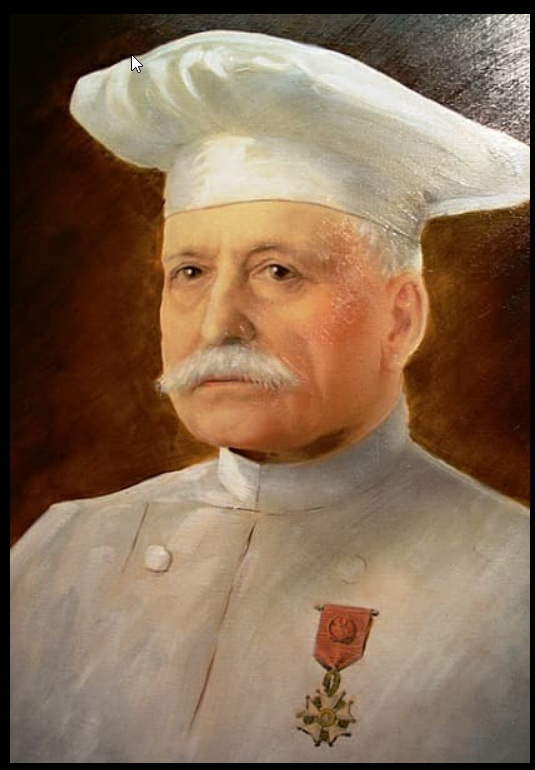

Sociedad Gastronómica y Cultural de Bilbao
Nuestra Historia
Fundada hace más de 100 años, nuestra sociedad gastronómica y cultural tiene como misión promover la cultura culinaria y el intercambio cultural. A lo largo de los años, hemos organizado eventos, talleres y concursos que han unido a personas con pasión por la cocina y el patrimonio cultural.
Hitos en Nuestra Historia
- 1923 - Fundación de la sociedad por Patxi Bibotehaundietxea Oriobeitia.
- 1924 - Primer evento gastronómico oficial, donde se presentó la receta del famoso estofado.
- 1973 - Celebración del 50º aniversario con miembros y amigos.
- 2000 - Inauguración de la nueva sede en el casco antiguo de Bilbao.
- 2023 - Celebración del centenario de la sociedad con eventos especiales.
Momentos Memorables

Fundador de la sociedad Patxi Bibotehaundietxea Oriobeitia.